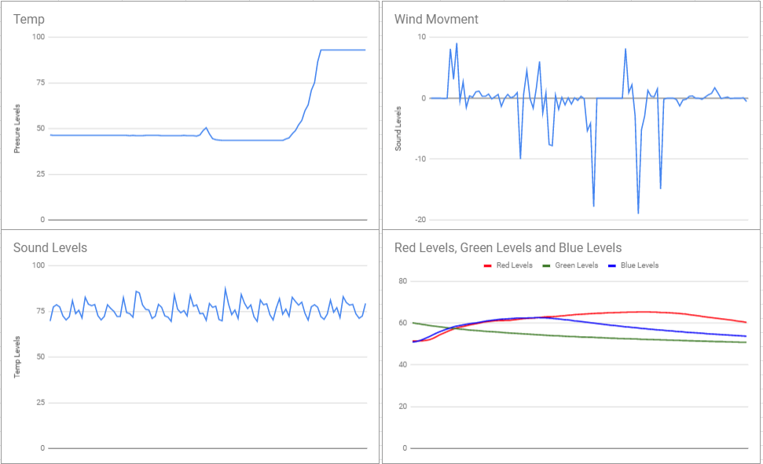
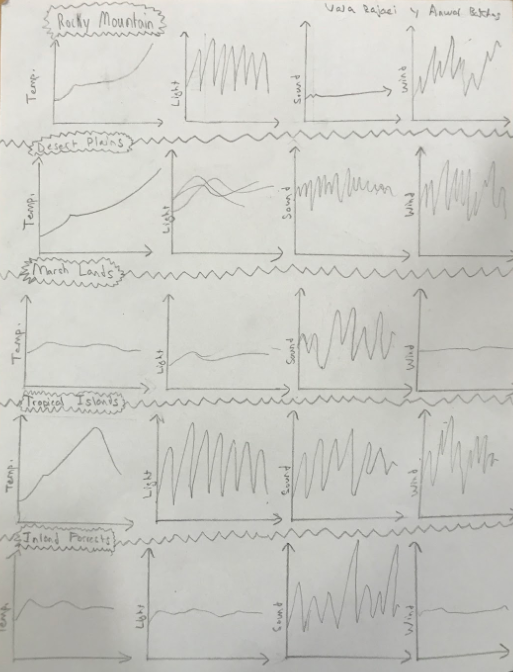
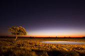
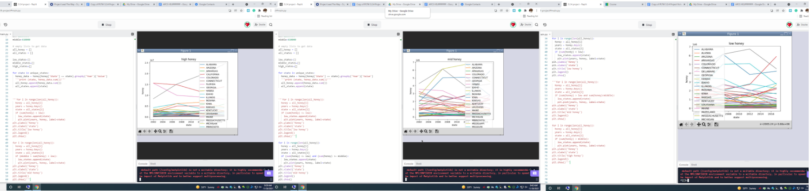

This coding project is about a clicker game. There is a burger that you have to click and when clicked the
amount of clicks shown increases. We add a time’s done image to indicate that you are done and we have a timer
that indicates how much time you still got. For visuals we added borders that were ketchup and mustard colored,
and added ketchup and mustard bottles. It was fun to make and it was more fun to play.
🌈Ping Pong Rainbow Edition🌈
This coding project is about a ping pong game. We have two paddles and one ball. The ball is going to be moving, and the players will move the paddle up and down
trying to hit the ball and score on the other player. In our program, we use onkeypress to call on each of the paddle functions. W and S are used to move the
corresponding paddles up and down. This allowed the user to play, we had collision function and border detection.
ABC Clicker
In this game we have a letter you have to click to gain currency and then by upgrades with that letter currency trying to gain enough that you can buy the next clicker/letter, trying to go all the way to the letter Z.
3.1.6 Project Rover Phone Home


Desert Plains

After graphing all the graphs for each biome and then comparing each graph to the graphs created from the data collected by the data the rover got at the biome, we saw that the graphs of the desert plains were really similar to the one from the rover. The temperature was similar, the light looked correct, even the sound and wind looked like the one from the data. In conclusion, the data the rover collects, after some analysing, is most likely from the desert plains.
3.2.4 Honey Data Graphs

PLTW gave us, data about honey production every year in every state, after wards we created code that would clean the data, geting rid of inproper values. Then we created a graph, after wards we created three graphs as shown above, low, middle, and high avarage sum production of honey, fianaly we customised the lines.